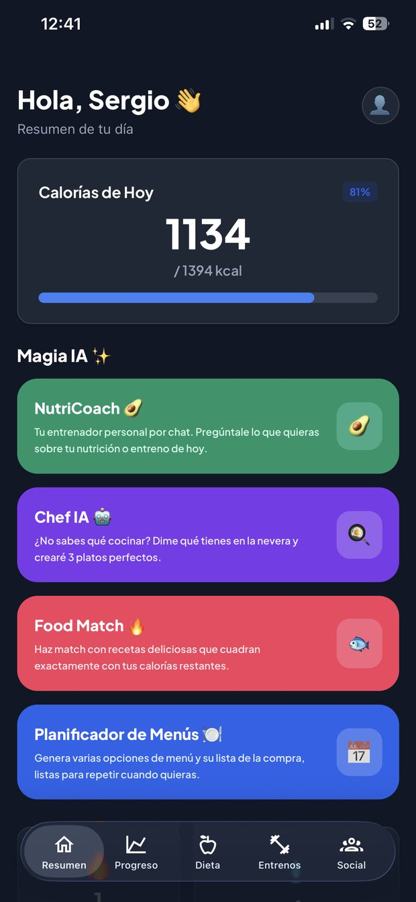
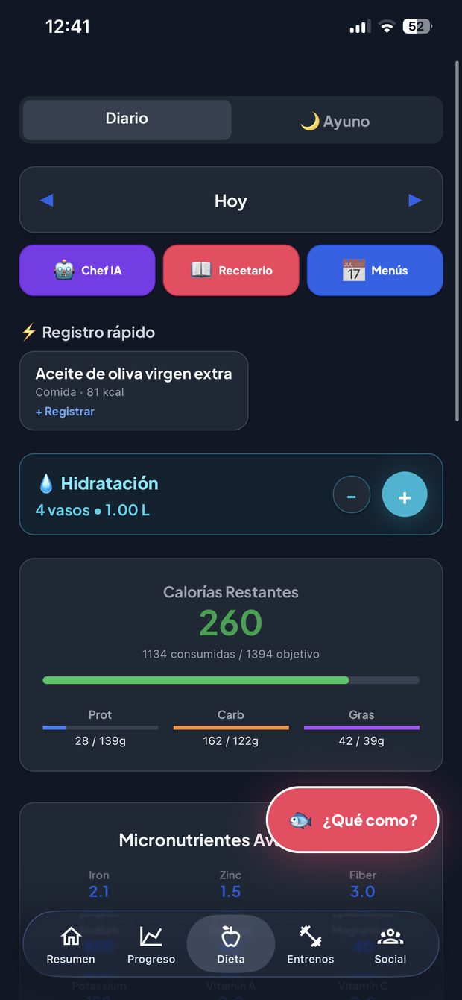
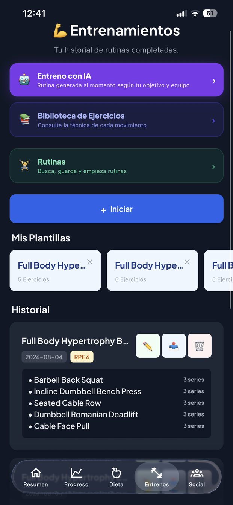
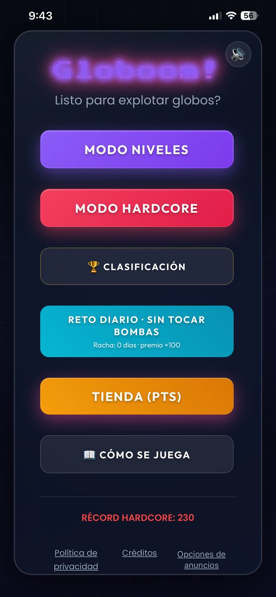
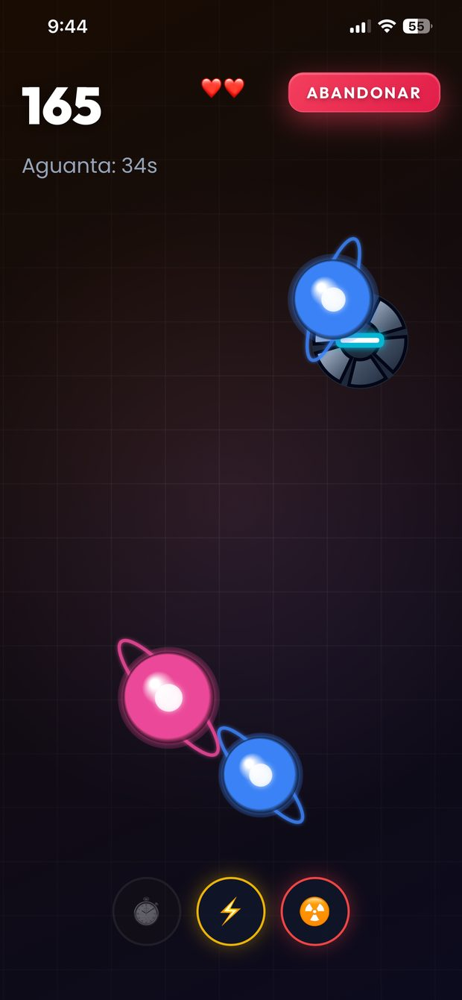
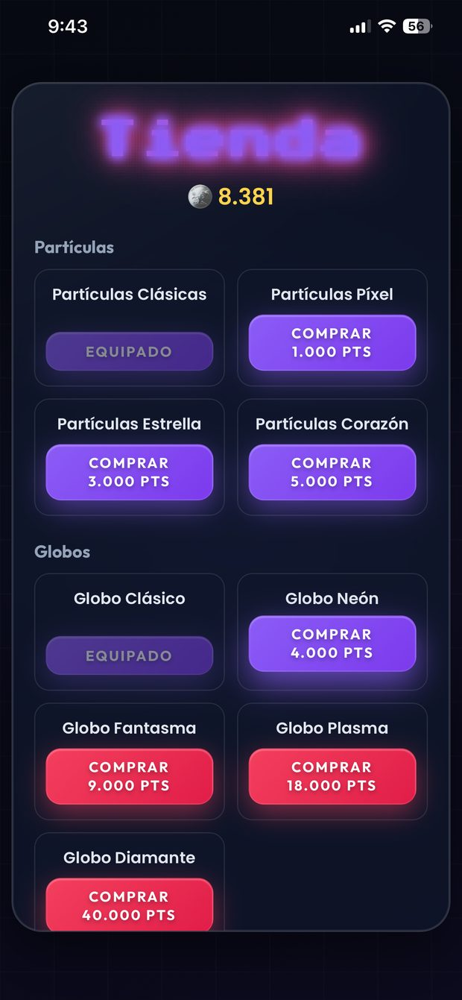

Soy técnico de soporte N2 y diseño y opero dos productos propios, cada uno con un modelo de negocio distinto: una plataforma de nutrición con suscripción y un juego de móvil monetizado con publicidad. De los dos llevo el alcance, el precio, las prioridades y qué se publica y qué no.
Esta página no es un currículum. Están los dos productos por dentro, y están las decisiones que los dejaron así, incluido lo que decidí perder a cambio.
Uno cobra por suscripción y tiene que cubrir un coste variable de IA en cada uso. El otro es gratis y vive de la publicidad. Fijar el precio de los dos obliga a pensar de dos maneras opuestas.
Plataforma de nutrición y entrenamiento con IA. Trece funciones de IA, cada una con su límite de uso calculado sobre lo que cuesta. Web operativa con cuenta unificada.



Arcade de partidas cortas. 30 niveles en 6 mundos con jefes, modo infinito con clasificación global y una tienda de cosméticos que se paga jugando, no pagando.



Siete decisiones documentadas, cada una con el problema que la provocó, lo que descarté y el coste que acepté a sabiendas. Son lo que mejor explica cómo trabajo.